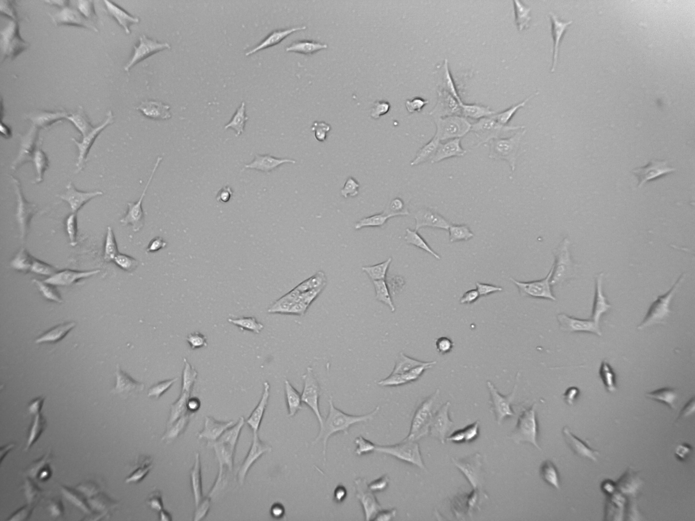
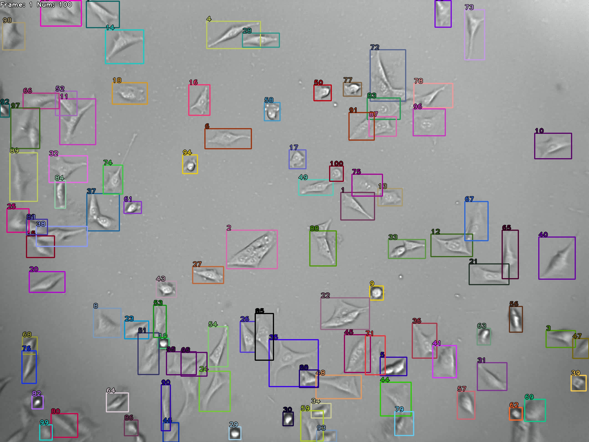
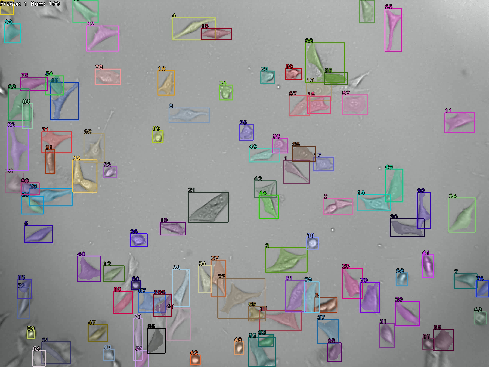
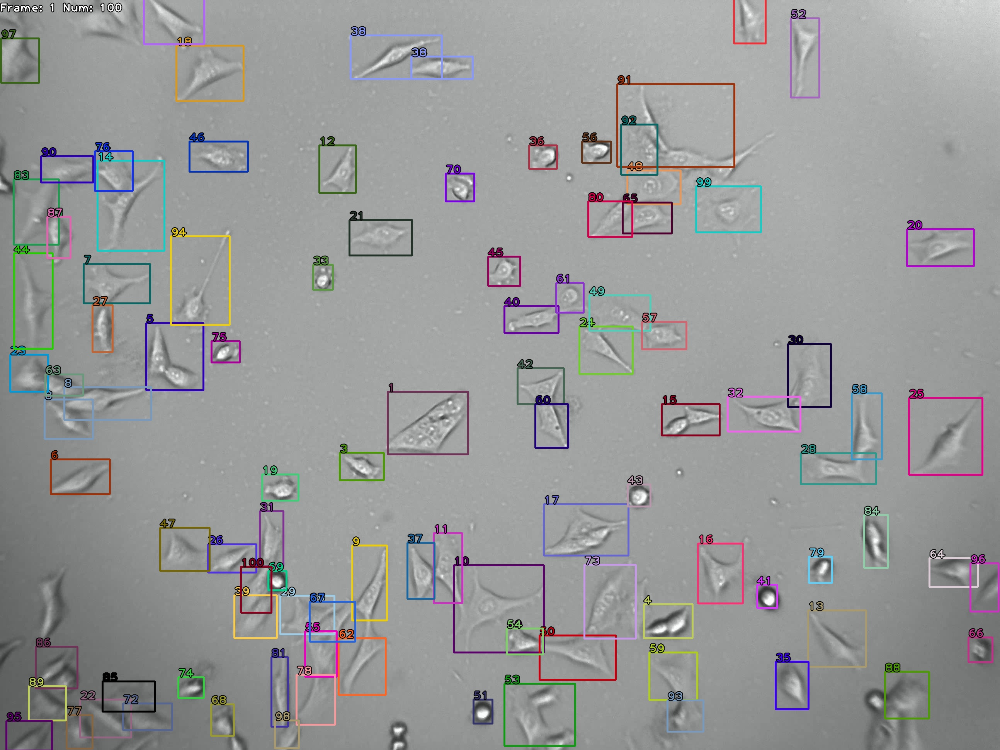
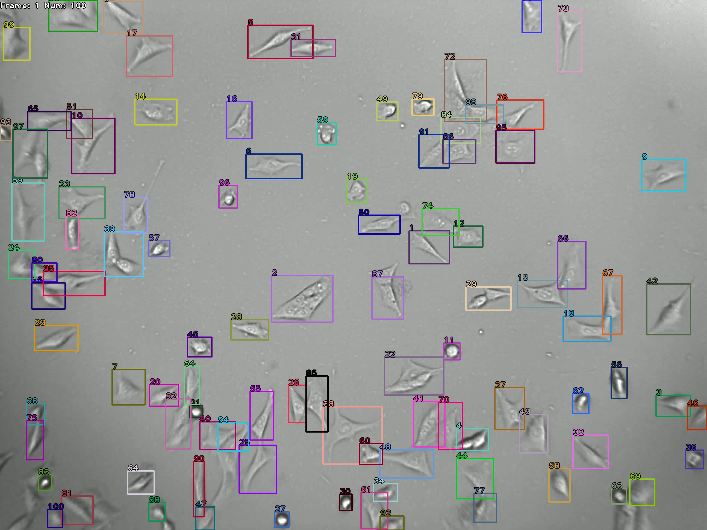
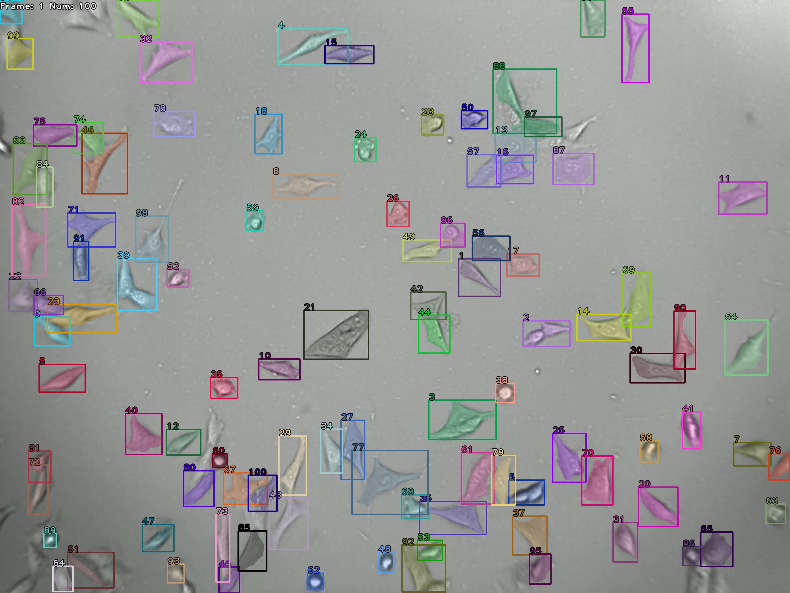
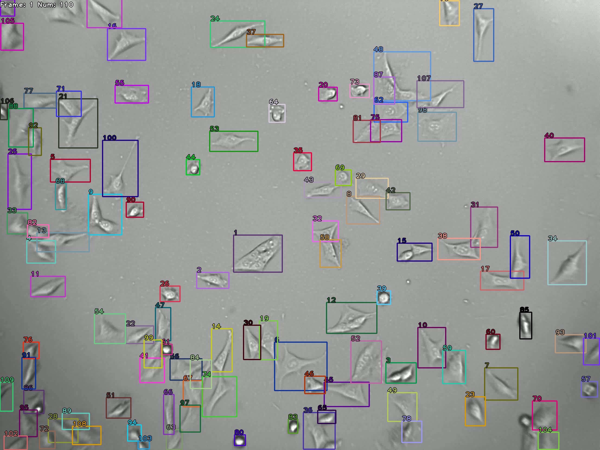

基于深度学习的神经细胞追踪技术研究
--------------实验结果
输入视频

查看视频
图片较大，请求较慢。
请稍等片刻或查看视频。
(a1) Faster R-CNN + DeepSORT

(b1) Mask R-CNN + DeepSORT

(c1) YOLOV5s + DeepSORT

(a2) Faster R-CNN + ByteTrack

(b2) Mask R-CNN + ByteTrack

(c2) YOLOV5s + ByteTrack
